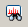

While a data file is open, select [Tools] in the menu bar and then select [Filter] > [Spectra] from the drop down menu.
The Filter Spectra dialog appears.
The Filter Spectra dialog can also be displayed by clicking the  icon in the toolbar.
Set the filter parameters and click [Filter].
The filtering results are displayed in the Filtered Spectrum List.